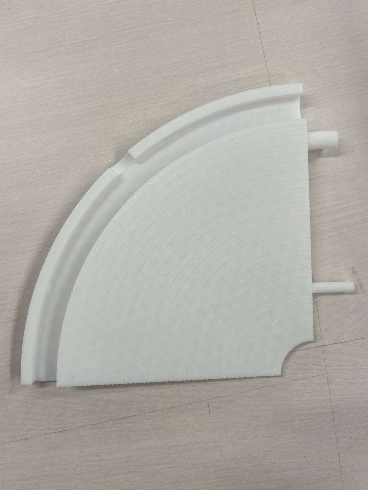
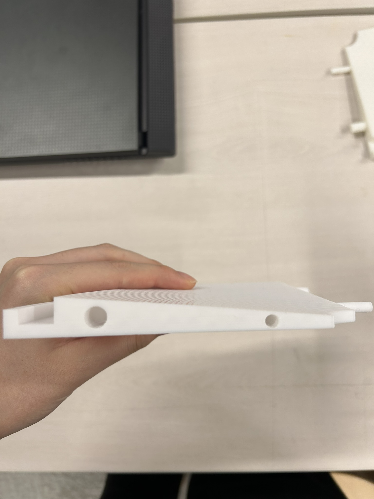
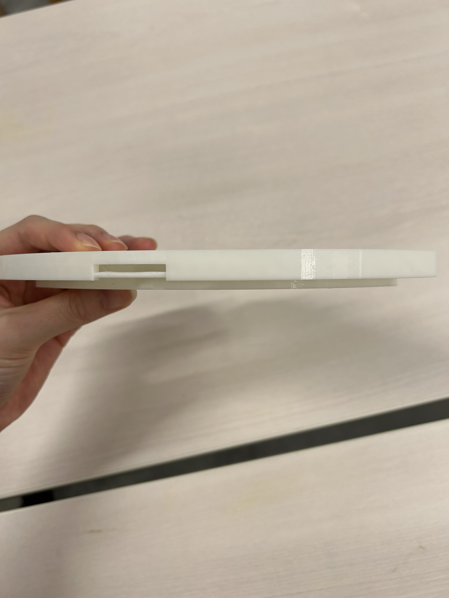
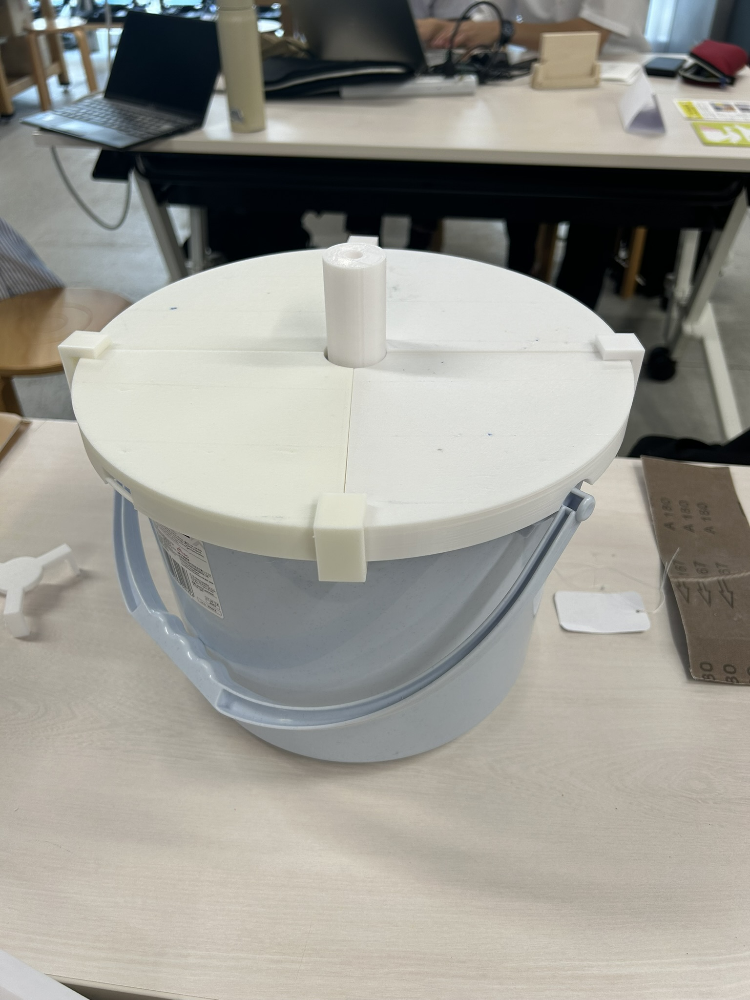
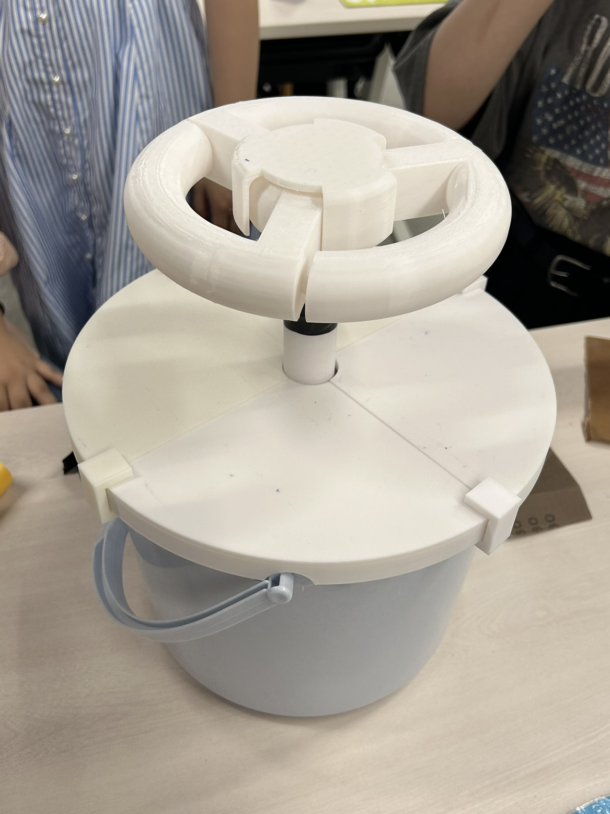
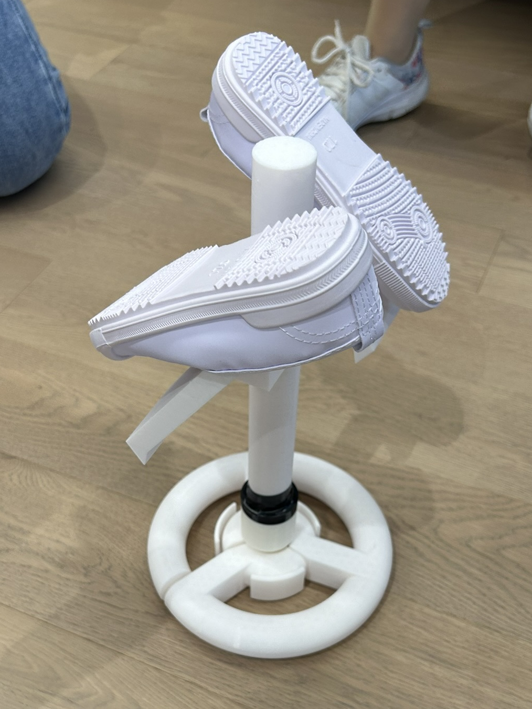
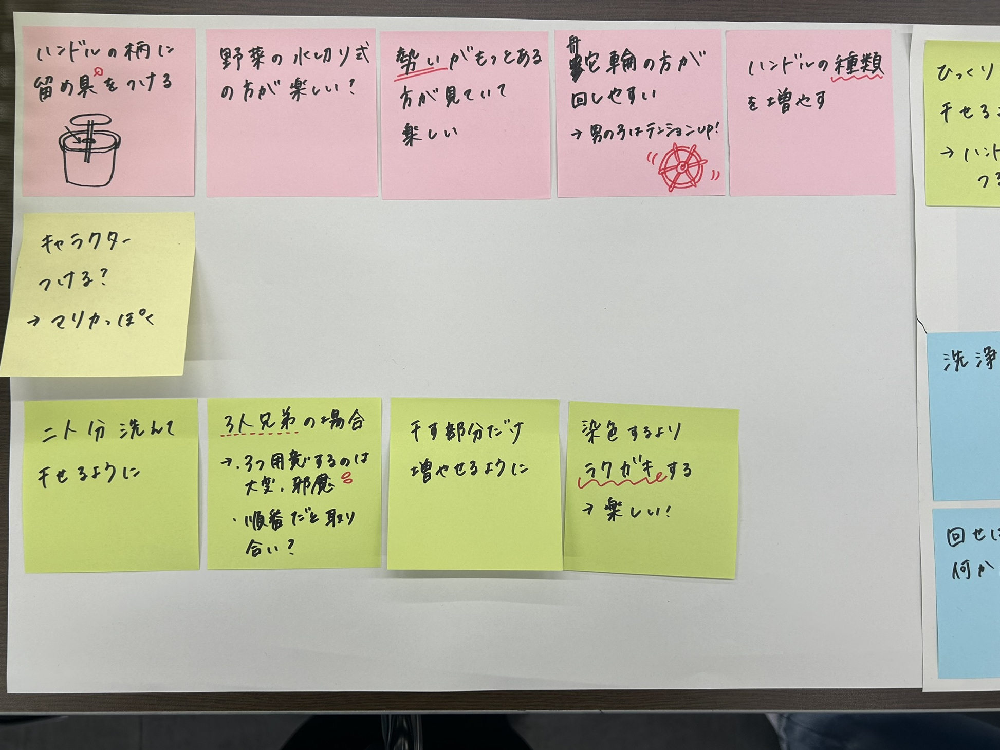
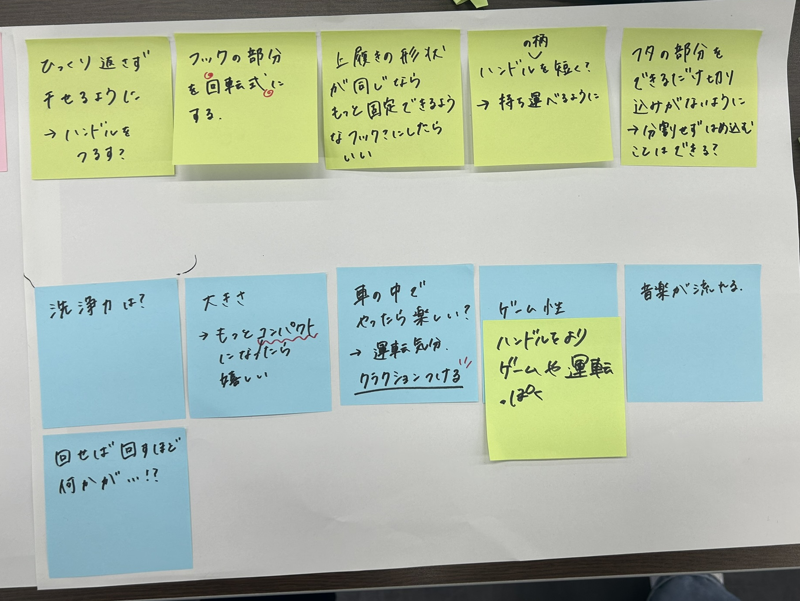

夏休みの活動
TODO
・各部品の出力、改善
・組み合わせる
・動画撮影
・組み合わせる
・動画撮影
  
個人的に考えた蓋の試作。
四分割した蓋同士がずれないように凹凸を作ったが、長さや太さ調節が難しく、設計が大変なわりにあまり安定感が無かった。
また、蓋とバケツを固定するフックをつけるための隙間を作ってみたが、外付けのフックを設計するのが難しく、全体を挟む？ような形に変更した。(りさちゃん作)
  
ハンドルごと逆さにして干してみたらいい感じ。
子ども向けの製品であることから、カラフルなデザインにしたいと考え、他のメンバーが着色作業をしてくれました。
また、中が見えた方が楽しめるのではないかという話合いの結果、蓋をアクリルで作り直すことに。
病欠のため、他のメンバーが話し合って全てを決めて作り直してくれました。
完成品↓↓

動画
発表当日にいただいたフィードバック  